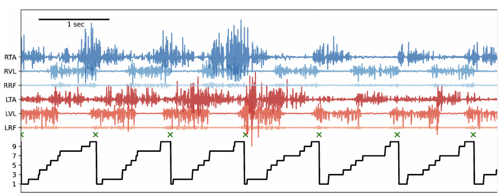
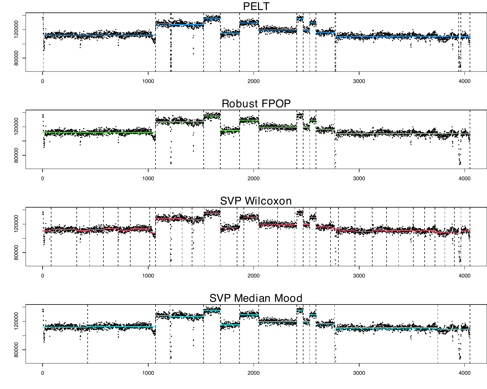
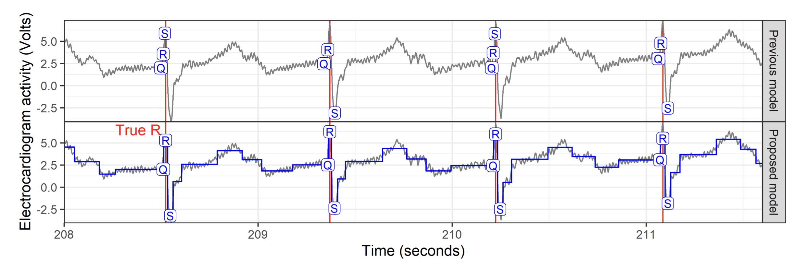
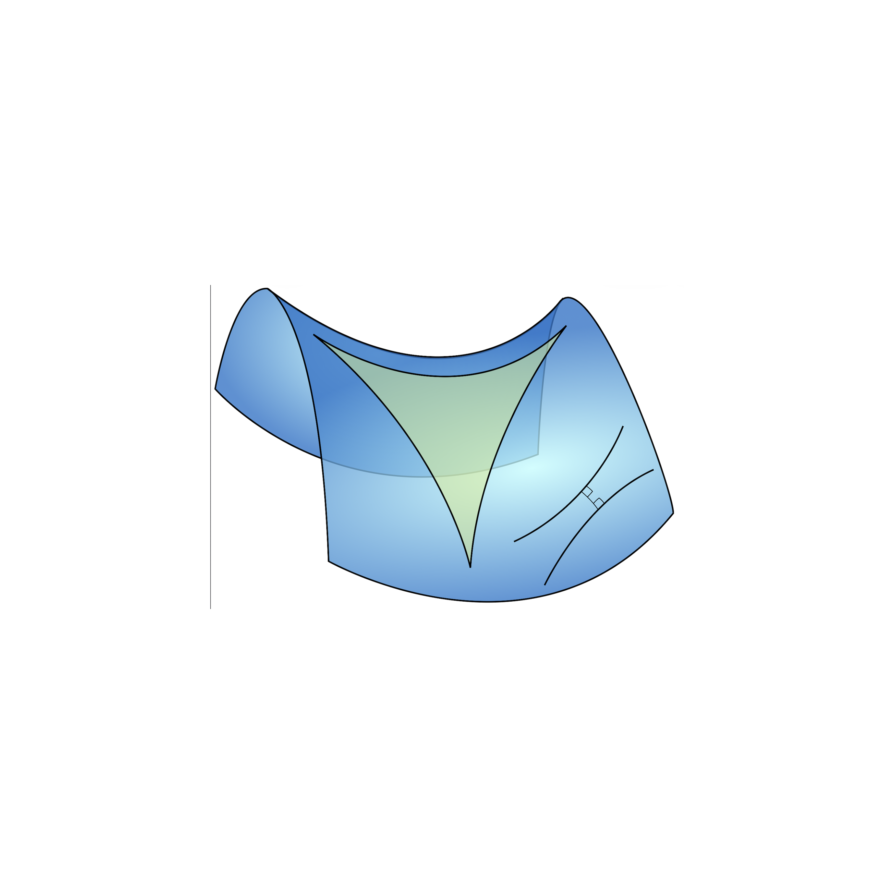
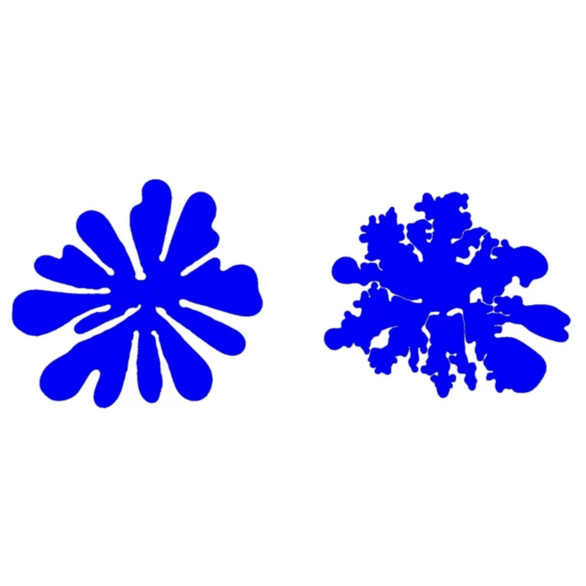
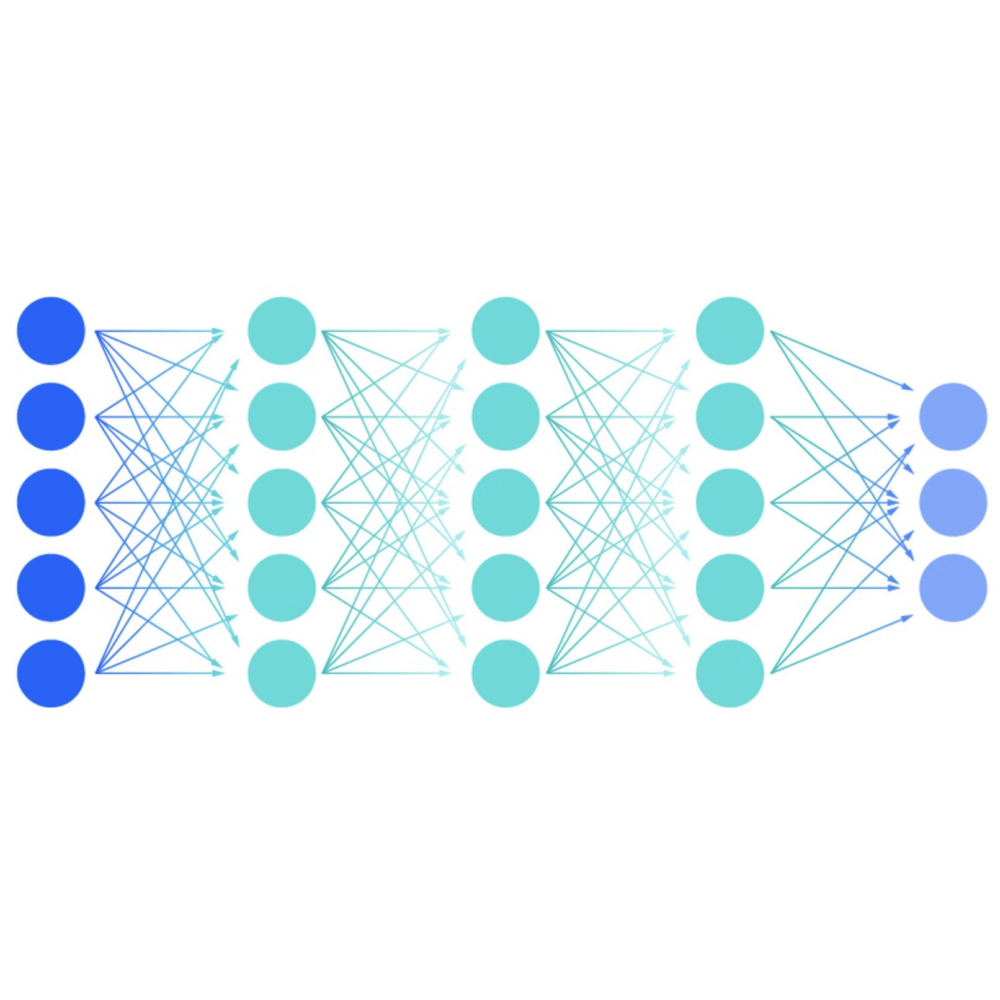
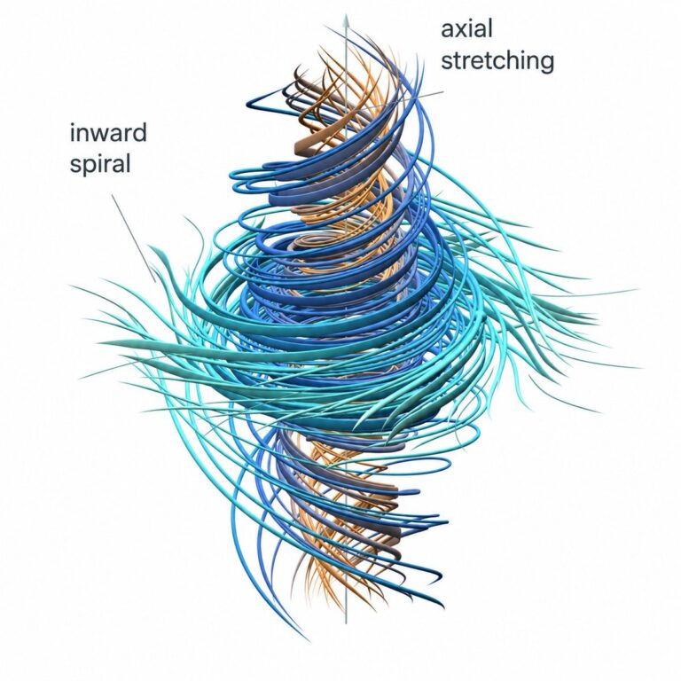

Research
My current research focuses on developing efficient algorithms for change-point detection in time series, with particular emphasis on exact methods, structured observations, and geometric ideas.
Current work: efficient change-point detection
My current research focuses on multiple change-point detection and dynamic programming. I draw on ideas from computational geometry and duality theory to improve the computational efficiency of exact change-point detection algorithms. This acceleration technique, commonly known as pruning, reduces the search space while preserving exactness.
Alongside my work on dynamic programming, I study statistical guarantees for change-point detection. Consistency and convergence rates for change-point estimators provide fundamental guarantees on the reliability of our algorithm. These questions are linked to the calibration of hyperparameters, and are crucial for the practical use of change-point detection methods.

Figure 3 from HOP article.

From SVP article.

From gfpop article.
Beyond Euclidean data

We extend change-point methods from ordinary Euclidean spaces to more complex, non-Euclidean data structures. This includes work with Hadamard spaces and CAT spaces, where notions of means and segment cost have to be extended. See HOP publication and the CAT spaces preprint.
Mathematical background

My background as a PhD student is in partial differential equations and mathematical analysis. The topic was motivated by the 2D free boundary Hele-Shaw problem. I worked with tools from complex analysis and control theory and developed C++ code for numerical simulations in fluid dynamics. This earlier work is documented in the earlier mathematical publications listed on my Publications page.
Broader interests in applied mathematics

More broadly, I am interested in applied mathematics and in developing my research and teaching toward advanced natural language processing, deep learning and supervised machine learning. I am particularly interested in questions of fairness and differential privacy, as these notions are fundamental to the responsible use of machine learning in society.
AI-assisted mathematics

I see AI-assisted mathematics as both a thread and an opportunity. As many of my colleagues, I try to follow and test recent developments. However, I am strongly opposed to using AI to automate the production of reports, publications or peer reviews. At the same time, I consider AI assistance an inevitable part of mathematical work, for example, as a tool for exploring ideas, polishing proofs, or searching for the key argument when I get stuck. I use it also for improving my written English (as done on this website).
I support the Human Mathematics Association and its efforts to promote the responsible use of AI and prevent its misuse in mathematics.
Software
An important part of my time is dedicated to developing software for change-point detection, even in this new area of code automation. A task that will become increasingly important in the future is the standardization of the many change-point detection software packages.
I develop R packages for change-point detection, including svpChange, DUST, gfpop and slopeOP. A complete list of papers, preprints and software is available on the Publications page and the Software page.
Applied statistics projects
Keeping a connection with the application of our research in statistics and mathematics is fundamental in our work. Listening to the needs of the practitioners is equally important and is a constant source for us of new ideas and research questions.
Antibiogram images: The SWITCH change-point algorithm measures inhibition-zone diameters from disk-diffusion antibiograms for use in a smartphone application (study).
Mouse behaviour ethogram: The HOP algorithm represents action syllables from mouse-monitoring data in a tree-structured Hadamard space, compressing 50 syllables into 7 interpretable meta-syllables, including exploration and grooming (HOP article).
Mouse muscle fatigue: The fast DUST algorithm detects variance changes in force-platform recordings to distinguish active and resting periods (DUST preprint).
ECG analysis: A constrained change-point model in gfpop locates QRS complexes in electrocardiogram waveforms (gfpop article).
Bacterial gene expression: DeCAFS detects abrupt changes in gene-expression levels in Bacillus subtilis. More generally, change-point detection is useful for identifying shifts in RNA-seq data (DeCAFS article; related work).
Ongoing projects outside of change-point detection
Anticholinergic prescriptions: Descriptive statistics and dose–effect study. Most supervised machine learning tools have been tested. This project is still ongoing and is in collaboration with Hervé Javelot from the Etablissement Public de Santé Alsace Nord, Brumath (EPSAN). Two mathematics master’s students have already worked with us on this project.
Bird vocalization: In collaboration with Lorenzo Dubois at the Muséum National d’Histoire Naturelle (MNHN), Ikram Niari’s 2026 internship analyzed BirdNET detections from the Risoux forest over 2018–2024. The study modeled log-transformed daily detection counts for the European robin (Erithacus rubecula) and coal tit (Periparus ater) using linear regression with seasonal and weather effects. We identify a long-term trend in vocal activity that could be linked to climate change.